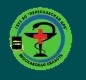

Адрес: г.Переславль-Залесский, ул.Свободы, д.42а
Email: zrb@pereslavl.ru
Телефоны: 8 (48535) 6-64-00; 3-23-19
©2021 Переславская ЦРБ
Адрес: г.Переславль‑Залесский, ул.Свободы,‑д.42а
Email: zrb@pereslavl.ru
Телефон: 8 (48535) 6‑64‑00; 3‑23‑19